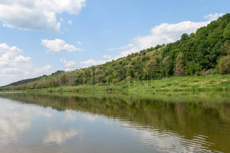
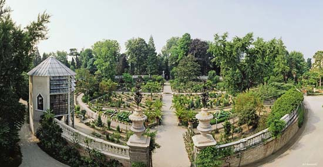
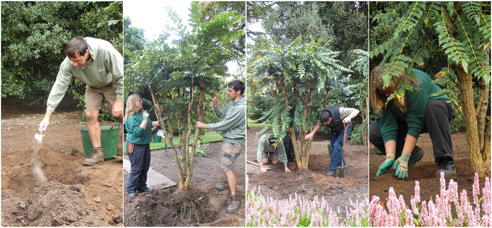

La fondazione e lo spostamento a Belluno
L'orto venne fondato il 17 ottobre 1755, per volere del conte Eusebio Stanchi, e ubicato nelle prosimità del fiume Piave. Conteneva più di 2000 piante raccolte da Marcello Zuanon, botanico e medico.
Nel 1774 il conte ordinò il suo trasferimento nel sito attuale del centro di Belluno, affidandone la progettazione agli architetti Francesco Sabatini e Gianfranco Villanova che organizzarono l'orto in tre terrazze a più livelli, sistemando le piante secondo il metodo di Linneo. Questo nuovo sito fu inaugurato nel 1781. La sua missione non era solo quella di esporre le piante, ma anche di insegnare la botanica, promuovere spedizioni per la scoperta di nuove specie di piante e di classificarle. L'erbario è il più grande in Veneto, e ha ora ha oltre un milione di esemplari.
La crescita e il suo arresto
L'orto venne ampliato con l'inserimento di 550 piante portate in Italia da Alessandro Buonaspina nel 1794. Dopo un periodo di crescita e buona gestione, accadde che, nel corso del 1848, anno della prima guerra di indipendenza in Italia, l'orto venne abbandonato. L'allora re di Sardegna Carlo Alberto di Savoia, il 23 marzo 1848, si pose a capo di una coalizione di Stati italiani e dichiarò guerra all'Austria, nell'intento di conquistare il Regno Lombardo-Veneto. In questo periodo molti civili erano impegnati nelle attività belliche, cosicchè altre attività, considerate di secondaria importanza, vennero trascurate. l'orto venne infatti chiuse le porte al pubblico
La riapertura, le perdite, gli anni recenti
Ma nel 1857 il suo direttore Costanzo Volterra diede inizio a un nuovo periodo di apertura; lo dotò di una nuova serra e sistemò la terrazza superiore. Sotto la sua direzione venne creato anche uno zoo successivamente spostato nel Parco delle Dolomiti. Fra il 1880 ed il 1890 l'orto subì delle perdite, esattamente nel 1882, e quindi, nel 1886, quando perse 564 alberi a seguito di un ciclone.
Nel 1933 venne dichiarato Bene Culturale e Patrimonio Artistico. Nel 1973, dopo un decennio di abbandono, venne chiuso al pubblico per un restauro, che lo riportò al disegno originario, e riaperto nel 1982.
WeBotanic
WeBotanic è una neonata associazione, il cui obiettivo principale è quello di coordinare le attività dell'orto di Belluno.
Quello che manteniamo è un giardino botanico: un luogo che mantiene una collezione ben documentata di piante, aperto al pubblico di tutte le età. WeBotanic nasce con lo scopo di promuovere la ricerca scientifica, la conservazione della biodiversità vegetale, la sua esposizione al pubblico e l'educazione ambientale ad essa connessa.
A causa delle attività umane e dei cambiamenti climatici che ne sono derivati, negli ultimi decenni abbiamo assistito ad un cambiamento di molti ecosistemi naturali; le conseguenze principali sono state la riduzione della diversità biologica e il conseguente pericolo per molte specie viventi esistenti, tra cui le piante. Il patrimonio vegetale è stato ed è diventato impossibile garantire la conservazione in natura di diverse specie.
Quindi gli orti botanici d'Italia, tra cui la nostra locazione bellunese, si sono attrezzati per svolgere l' importante missione della conservazione della flora, attraverso specifiche attività sia di conservazione presso le loro sedi di piante vive e di semi, che di educazione e di divulgazione, per contribuire alla diffusione di una nuova cultura ambientale, più attenta e rispettosa degli equilibri indispensabili alla vita, ad ogni forma di vita.
